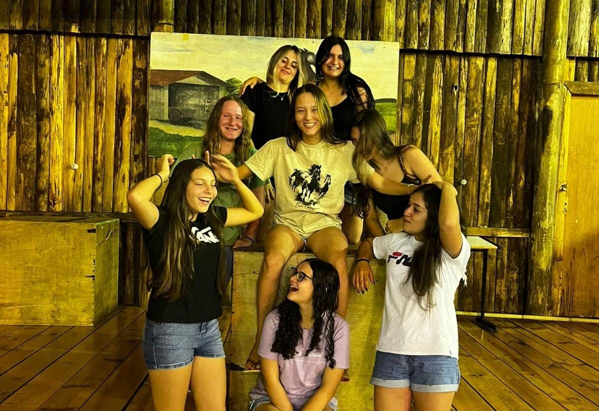
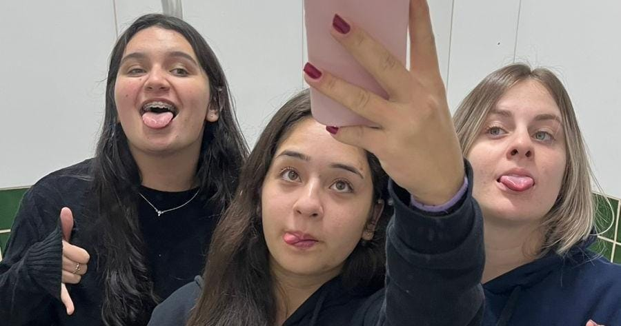
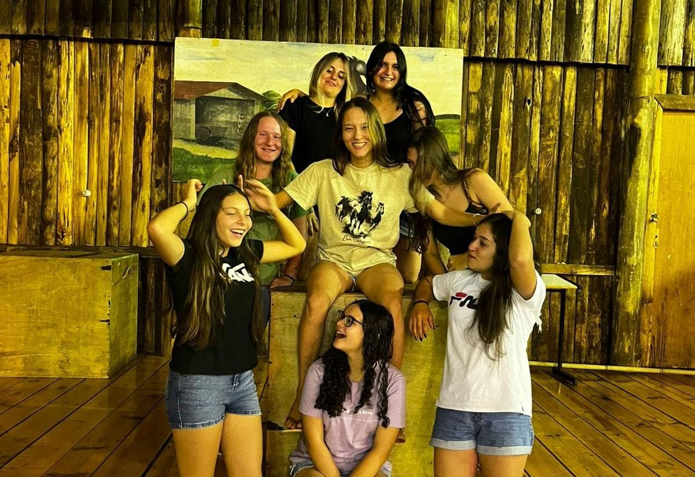
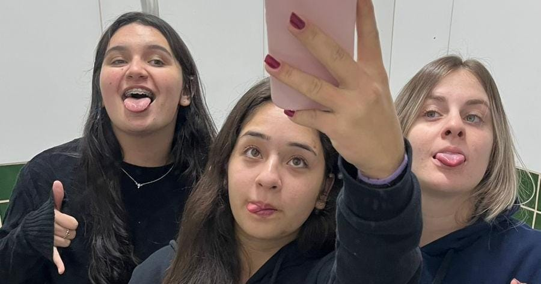

Princess Word
Bem-vinda ao meu mundo cor-de-rosa, aqui tem um pouco de tudo sobre mim! ✨
 



Friends
Meus melhores amigos são meus pais, obviamente. Amo eles imensamente! Mas minha melhor amiga é a Maria, minha fedida favorita 💖. Independente de tudo, foi no IFC que encontrei meu grupo de amigos incríveis. Amo muito todos eles.
Sonhos
Meus sonhos são bem comuns, mas muito importantes pra mim:
- Me formar no ensino médio;
- Fazer faculdade em uma universidade federal;
- Casar com o amor da minha vida;
- Ter dois filhos – um menino e uma menina;
- Viajar o mundo;
- Ter meu fusca rosa;
- Morar na praia;
- Dar orgulho pros meus pais.
Músicas
Eu gosto de vários estilos musicais:
- Rock nacional: minha banda favorita é Charlie Brown Jr.
- Boombap: adoro Puma PJL e SZ Diniz.
- MPB: amo Rita Lee (a diva!) e Armandinho.
- Sertanejo: gosto dos clássicos como Jorge e Mateus, Ícaro e Gilmar, Luan Santana, Zé Neto e Cristiano.
Sobre a Diva
Gosto de cozinhar (mas odeio que fiquem se metendo enquanto faço algo ). Amo ouvir música e assistir filmes — especialmente comédias românticas, filmes de época e de ação. Meus favoritos são A Culpa é das Estrelas e Como Se Fosse a Primeira Vez.
Amo a Disney, principalmente as princesas! Minhas favoritas são a Bela, Ariel e, claro, Branca de Neve 💗.
Adoro escrever, mas só coisas que o coração sente e a boca não consegue falar. Nunca, jamais em hipótese alguma, deixo alguém ler o que escrevo.Odeio brigar com alguém e odeio pedir desculpas também.
Amo falar (tanto que minha futura profissão é nessa área). Amo crianças, amo animais (mas tenho medo de bichos grandes ). Ah, e também sou apaixonada por futebol e Fórmula 1. Torço pro São Paulo e pra Ferrari!